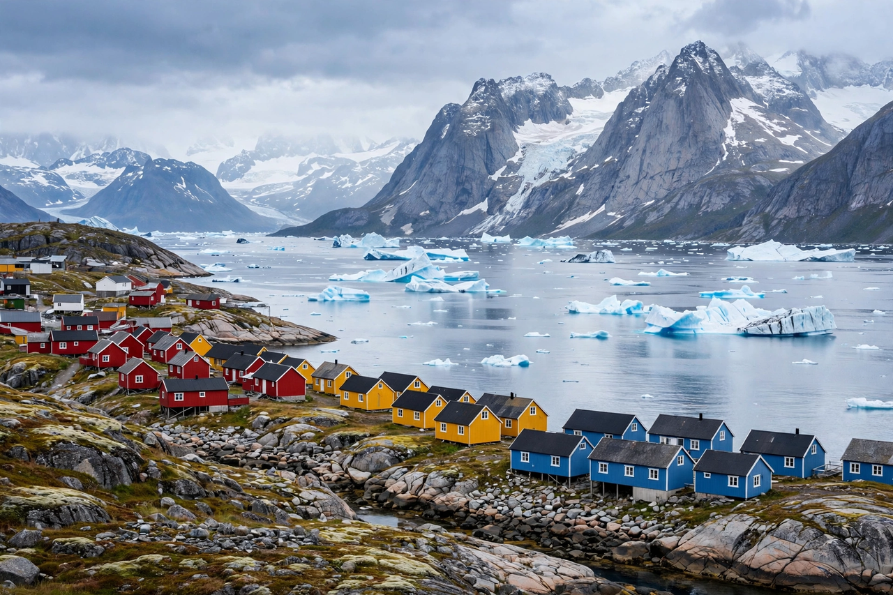

[Image placeholder: Nuuk's colourful houses on the fjord]| Country | Greenland (Kingdom of Denmark) |
|---|---|
| Population | About 19,600 — Greenland's largest town |
| Founded | 1728 as Godthåb by Hans Egede |
| Name | Nuuk means 'cape' in Greenlandic |
**Nuuk** is the capital and largest town of Greenland, on a fjord at the southwestern coast where the Nuup Kangerlua (Godthåb Fjord) meets the Labrador Sea. With around 19,600 residents it holds more than a third of Greenland's population. Founded in 1728 by the missionary Hans Egede as Godthåb ('good hope'), it became the seat of Greenland's self-government in 1979 and of the Self-Government (Selvstyre) from 2009.
Nuuk combines Danish-era colonial harbour buildings (Egede's house, the red wooden cathedral of 1849) with modern blocks and the Katuaq cultural centre. Its colourful houses overlook a working harbour of shrimp trawlers and hunting boats; there are no roads to other towns — travel is by boat, helicopter and plane. The University of Greenland (Ilisimatusarfik) and the national museum, holding the Qilakitsoq mummies, are here. Whales feed in the fjord in summer, and the northern lights light winter skies.
Nuuk is growing fast as Greenlanders move from small settlements. A new international airport opened in 2024 allows direct jets from Copenhagen and beyond, a milestone in Greenland's push for tourism and greater self-reliance. Housing shortages and the balance between Danish subsidy, mining hopes and independence politics dominate debate.